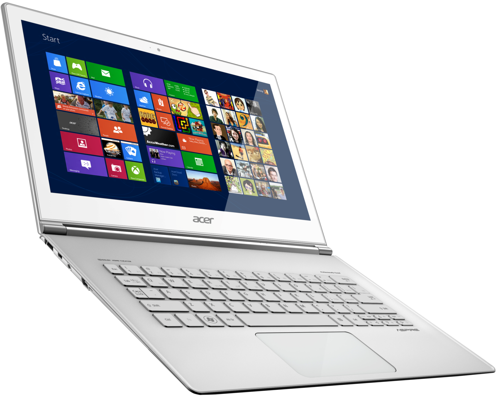
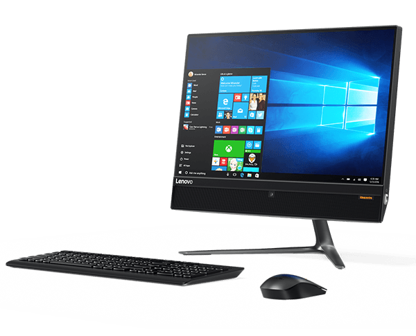

El computador, también conocido generalmente como ordenador o computadora, es una compleja máquina que procesa y ejecuta órdenes de diversa índole para dar como resultado un sinfín de tareas distintas. Creada hace muchas décadas, este aparato sigue en constante evolución y es uno de los inventos más populares de la historia, ocupando un lugar en casi todos los hogares del mundo.
Al igual que el cuerpo humano, la computadora necesita de una parte material, tangible y visible para funcionar, pero también de ideas, funciones y un alma que no se puede ver. Ambas cosas reciben el nombre de hardware y software.
El hardware son los elementos físicos (periféricos) como el teclado, el ratón, la pantalla o monitor, los cables, plaquetas y todo tipo de elementos que forman al computador de manera sólida. Pero en su interior, grabado en la memoria, encontramos el software, que son los programas, sistemas operativos y funciones instaladas que le dan vida y coordinan lo material para funcionar.

Las computadoras portátiles, comúnmente conocidas como laptops, son un tipo de computadora personal diseñada para ser transportada con facilidad y utilizada en cualquier lugar. Aquí tienes más información sobre las laptops:
1. Tamaño y Portabilidad:
2. Características Técnicas:
3. Pantallas y Resoluciones:
4. Sistemas Operativos:
5. Duración de la Batería:
6. Conectividad:
7. Usos Comunes:
8. Precio:
9. Actualizaciones:
10. Marcas Populares:
En resumen, las laptops son dispositivos versátiles y portátiles que se adaptan a una amplia variedad de necesidades y usos, lo que las convierte en una elección popular tanto para usuarios domésticos como profesionales.

El término notebook se utiliza en algunos lugares como sinónimo de laptop o computadora portátil. En esencia, una notebook es una computadora portátil diseñada para ser compacta y fácil de transportar, similar a lo que se conoce como una laptop en otros lugares. A menudo, la distinción entre las dos palabras se basa en preferencias regionales o de marketing más que en diferencias tecnológicas significativas.
En resumen, en muchos contextos, una notebook es simplemente otro término para una laptop o computadora portátil, y se utilizan para realizar una amplia variedad de tareas informáticas en movimiento. Estas computadoras son populares debido a su portabilidad y versatilidad, lo que las hace ideales para trabajadores móviles, estudiantes y cualquier persona que necesite llevar consigo una computadora personal.

Un Ultrabook es una categoría específica de computadoras portátiles que fue introducida por Intel para describir una clase de laptops ultradelgadas, livianas y de alto rendimiento. Los Ultrabooks se caracterizan por varias características clave:
1. Delgadez y Ligereza: Los Ultrabooks est+an diseñados para ser extremadamente delgados y ligeros, lo que los hace altamente portátiles y fáciles de llevar a cualquier lugar.
2. Rendimiento de Alto Nivel: A pesar de su diseño delgado, los Ultrabooks están equipados con hardware de alto rendimiento, incluidos procesadores potentes, memoria RAM adecuada y unidades de almacenamiento de estado sólido (SSD) que ofrecen un rendimiento rápido.
3. Duración de la Batería: Los Ultrabooks suelen tener una duración de batería considerable. Intel estableció inicialmente una meta de al menos 5 horas de duración de la batería, pero muchos modelos actuales superan ampliamente esta cifra, proporcionando hasta 10 horas o más de uso con una sola carga.
4. Pantallas de Alta Resolución: La mayoría de los Ultrabooks vienen con pantallas de alta resolución, que pueden ser Full HD (1920 x 1080 píxeles) o incluso resoluciones más altas, lo que brinda una experiencia visual nítida.
5. Arranque Rápido: Los Ultrabooks generalmente incluyen tecnologíca de arranque rápido, lo que significa que pueden encenderse y estar listos para su uso en cuestión de segundos.
6. Diseño Premium: Muchos Ultrabooks están diseñados con materiales de alta calidad, como aluminio o fibra de carbono, y tienen un aspecto elegante y moderno.
7. Conectividad: Aunque la delgadez puede limitar la cantidad de puertos, los Ultrabooks generalmente incluyen una variedad de opciones de conectividad, como puertos USB, HDMI y a menudo puertos USB-C o Thunderbolt para una transferencia de datos más rápida.
8. Seguridad: Muchos Ultrabooks incorporan características de seguridad como lectores de huellas dactilares, reconocimiento facial o TPM (Módulo de plataforma segura) para proteger los datos y la privacidad del usuario.
9. Sistema Operativo: Los Ultrabooks pueden ejecutar varios sistemas operativos, incluidos Windows, macOS (en el caso de las MacBook Air de Apple) y algunas distribuciones de Linux.
10. Precio: Los Ultrabooks tienden a estar en el segmento de precios premium debido a sus características de alto rendimiento y diseño elegante.
Los Ultrabooks se han vuelto populares entre profesionales y usuarios que valoran la portabilidad y el rendimiento en un solo paquete. A lo largo de los años, esta categoría de laptops ha evolucionado y ha visto mejoras en términos de rendimiento, duración de la batería y diseño, lo que los convierte en una opción atractiva para una amplia gama de usuarios.

Un Chromebook es un tipo de computadora portátil que se ejecuta en el sistema operativo Chrome OS, desarrollado por Google. A diferencia de las computadoras portátiles tradicionales que utilizan sistemas operativos como Windows o macOS, los Chromebooks están diseñados específicamente para trabajar en línea y aprovechar los servicios en la nube de Google. Aquí hay algunas características clave de los Chromebooks:
1. Sistema Operativo Chrome OS: Los Chromebooks utilizan Chrome OS, un sistema operativo basado en el navegador Google Chrome. Esto significa que la mayoría de las aplicaciones y servicios se ejecutan en línea a través del navegador.
2. Nube y Almacenamiento en la Nube: Los Chromebooks almacenan la mayoría de los datos y archivos en la nube, utilizando servicios como Google Drive. Esto permite acceder a tus documentos y archivos desde cualquier dispositivo con una conexión a Internet.
3. Aplicaciones Web y de la Tienda de Chrome: Puedes utilizar aplicaciones web en tu Chromebook, que se ejecutan a través del navegador Chrome. Además, también puedes acceder a la Tienda de Chrome para descargar aplicaciones y extensiones adicionales.
4. Seguridad y Actualizaciones Automáticas: Chrome OS se considera un sistema operativo seguro porque las actualizaciones de seguridad se aplican automáticamente en segundo plano. Además, los Chromebooks tienen protección antivirus incorporada.
5. Arranque Rápido: Los Chromebooks tienen tiempos de arranque muy rápidos y generalmente están listos para su uso en segundos.
6. Duración de la Batería: Muchos Chromebooks ofrecen una excelente duración de la batería, lo que los hace ideales para usuarios en movimiento.
7. Precio Asequible: Los Chromebooks suelen ser más asequibles en comparación con algunas laptops con otros sistemas operativos, lo que los convierte en una opción atractiva para la educación y usuarios que buscan una solución económica.
8. Sincronización con Cuenta de Google: Para utilizar un Chromebook, necesitas una cuenta de Google. Esto permite una fácil sincronización de datos y configuraciones entre dispositivos.
9. Modelos Variados: Existen diferentes modelos de Chromebooks con variaciones en términos de especificaciones, tamaños de pantalla y diseños para adaptarse a diversas necesidades.
10. Limitaciones Offline: Aunque los Chromebooks son excelentes para tareas en línea, pueden tener limitaciones cuando no tienes acceso a Internet. Sin embargo, algunas aplicaciones y documentos se pueden habilitar para uso sin conexión.
Los Chromebooks son particularmente populares en entornos educativos y empresariales debido a su facilidad de administración, seguridad y precio accesible. Son ideales para tareas como navegación web, correo electrónico, procesamiento de textos y aplicaciones en línea, pero pueden no ser la mejor opción si necesitas software específico que solo se ejecuta en sistemas operativos tradicionales como Windows o macOS.

Una Mini PC es una computadora personal compacta y de pequeño tamaño que ofrece un rendimiento y funcionalidad similares a las computadoras de escritorio tradicionales en un factor de forma más pequeño. Estas mini computadoras son populares debido a su tamaño reducido y su versatilidad en una variedad de aplicaciones. Aquí tienes algunas características comunes de las Mini PC:
1. Factor de Forma Compacto: Las Mini PC son notablemente más pequeñas que las computadoras de escritorio convencionales y pueden tener diferentes diseños, como cajas cuadradas o dispositivos tipo stick que se conectan directamente a un monitor o televisor.
2. Bajo Consumo de Energía: Muchas Mini PC están diseñadas para ser eficientes en términos de energía y consumen menos electricidad en comparación con las computadoras de escritorio estándar.
3. Rendimiento Adecuado: Aunque son más pequeñas, las Mini PC a menudo ofrecen suficiente potencia para tareas cotidianas como navegación web, procesamiento de documentos, reproducción de medios y algunas aplicaciones ligeras.
4. Amplias Opciones de Conectividad: A pesar de su tamaño, las Mini PC suelen incluir una variedad de puertos y opciones de conectividad, como puertos USB, HDMI, Wi-Fi y Bluetooth.
5. Uso Variado: Las Mini PC se utilizan en una variedad de aplicaciones, como estaciones de trabajo ligeras en oficinas, sistemas de entretenimiento en el hogar, quioscos interactivos, servidores domésticos, y más.
6. Silenciosas: Dado que suelen utilizar hardware de bajo consumo energético, las Mini PC tienden a ser silenciosas y generar menos calor en comparación con las computadoras de escritorio más grandes.
7. Personalización Limitada: Aunque algunas Mini PC permiten actualizaciones de componentes, como la memoria RAM o el almacenamiento, a menudo tienen componentes soldados o no son tan fáciles de personalizar como las computadoras de escritorio tradicionales.
8. Sistemas Operativos Diversos: Pueden ejecutar varios sistemas operativos, incluidos Windows, Linux y, en algunos casos, sistemas operativos específicos, como Chrome OS en Chromeboxes.
Las Mini PC son ideales para usuarios que desean una computadora que ocupe poco espacio y ofrezca un rendimiento suficiente para tareas cotidianas, pero que no necesariamente requieran la potencia de una computadora de escritorio completa. También son útiles en aplicaciones donde el espacio es limitado o se requiere una solución de computación compacta.

Una PC AIO (All-in-One) es una computadora de escritorio que integra todos los componentes principales de una computadora en un solo chasis que incluye la pantalla. Estas computadoras están diseñadas para ahorrar espacio y reducir el desorden de cables al eliminar la necesidad de una torre de computadora independiente. Aquí tienes información sobre las características comunes de las PC AIO:
1. Pantalla Integrada: La característica más destacada de una PC AIO es que la pantalla y la computadora están combinadas en un solo dispositivo. Esto significa que la pantalla es parte integral de la computadora y no se puede separar.
2. Diseño Elegante y Compacto: Las PC AIO suelen tener un diseño delgado y moderno que ahorra espacio. Este diseño minimalista es atractivo y se integra bien en entornos de oficina y hogar.
3. Tamaños de Pantalla Variables: Las PC AIO están disponibles en una variedad de tamaños de pantalla, desde modelos pequeños de 21 pulgadas hasta versiones más grandes de 27 pulgadas o incluso más grandes. La elección del tamaño depende de las preferencias personales y las necesidades de uso.
4. Rendimiento Variado: Al igual que las computadoras de escritorio tradicionales, las PC AIO vienen en una variedad de configuraciones de hardware que ofrecen diferentes niveles de rendimiento. Pueden ser adecuadas para tareas básicas como navegación web y procesamiento de documentos, así como para tareas más exigentes como edición de video y juegos.
5. Conectividad Completa: A pesar de su diseño compacto, las PC AIO generalmente cuentan con una amplia gama de puertos y opciones de conectividad, incluidos puertos USB, HDMI, Ethernet y Wi-Fi.
6. Almacenamiento y Memoria: Las PC AIO suelen incluir unidades de almacenamiento de disco duro o SSD y memoria RAM que varían en capacidad según el modelo. Algunas permiten actualizaciones de hardware.
7. Sistema Operativo: Pueden ejecutar diversos sistemas operativos, como Windows, macOS o Linux, según el fabricante y el modelo.
8. Inalámbricos: Muchas PC AIO están equipadas con conectividad inalámbrica Bluetooth y Wi-Fi, lo que permite conectar dispositivos periféricos y acceder a Internet de forma inalámbrica.
9. Cámara Web y Altavoces Integrados: La mayoría de las PC AIO incluyen una cámara web y altavoces integrados, lo que las hace adecuadas para videollamadas y entretenimiento multimedia.
10. Actualizaciones Limitadas: A menudo, las PC AIO no son tan fáciles de actualizar o personalizar como las computadoras de escritorio tradicionales, ya que los componentes pueden estar diseñados para encajar en un espacio compacto.
Las PC AIO son ideales para usuarios que buscan un enfoque de computación elegante y simplificado, sin la necesidad de lidiar con una torre de computadora independiente y cables. Son adecuadas para una variedad de aplicaciones, desde la productividad en la oficina hasta el entretenimiento en el hogar, y su elección depende de las necesidades individuales y el presupuesto del usuario.

Los equipos de escritorio, también conocidos como computadoras de escritorio o PCs de escritorio, son sistemas de computadoras personales diseñados para su uso en una ubicación fija, como un escritorio, una oficina o un espacio de trabajo en el hogar. A diferencia de las computadoras portátiles (laptops) y las tabletas, los equipos de escritorio generalmente constan de componentes separados y pueden ofrecer un mayor rendimiento y capacidad de expansión. Aquí tienes información sobre las características típicas de los equipos de escritorio:
1. Torre o Gabinete: La mayoría de los equipos de escritorio constan de una torre o un gabinete que alberga los componentes principales de la computadora, como la CPU (Unidad Central de Procesamiento), la tarjeta madre, la fuente de alimentación y las unidades de almacenamiento. Existen diferentes tamaños de torres, incluyendo torres de tamaño completo, torres medianas y torres compactas.
2. Monitor: Los equipos de escritorio generalmente se utilizan con monitores externos que pueden variar en tamaño y calidad de imagen. Los monitores se conectan al gabinete a través de puertos como HDMI, VGA o DisplayPort.
3. Teclado y Ratón: Los equipos de escritorio suelen incluir un teclado y un ratón como dispositivos de entrada estándar. Estos periféricos pueden ser cableados o inalámbricos.
4. CPU y Componentes Internos: Los equipos de escritorio pueden equiparse con una amplia variedad de procesadores, memoria RAM, tarjetas gráficas, unidades de almacenamiento (HDD o SSD) y otros componentes internos según las necesidades del usuario. Esto permite una mayor flexibilidad para adaptar la computadora a tareas específicas.
5. Sistema Operativo: Los equipos de escritorio pueden ejecutar una variedad de sistemas operativos, siendo Windows, macOS y Linux los más comunes. La elección del sistema operativo depende del usuario y sus preferencias.
6. Conectividad y Puertos: Los equipos de escritorio ofrecen numerosos puertos de conectividad, como USB, Ethernet, HDMI, DisplayPort, audio y otros, que permiten conectar dispositivos periféricos, monitores adicionales, redes y más.
7. Rendimiento Potente: Debido a su diseño y capacidad de enfriamiento adecuado, los equipos de escritorio suelen ofrecer un rendimiento más potente que las computadoras portátiles o tabletas. Esto los hace ideales para tareas exigentes como juegos, edición de video y diseño gráfico.
8. Capacidad de Expansión: Los equipos de escritorio permiten una fácil expansión y actualización de hardware. Los usuarios pueden agregar más memoria RAM, cambiar la tarjeta gráfica, actualizar unidades de almacenamiento y más para mantener su computadora actualizada con el tiempo.
9. Durabilidad y Confiabilidad: Los equipos de escritorio tienden a ser duraderos y confiables, ya que no se mueven con frecuencia y tienen más espacio para sistemas de enfriamiento eficientes.
10. Precio Variado: Los equipos de escritorio pueden variar en precio desde opciones económicas para tareas básicas hasta sistemas de alto rendimiento para aplicaciones avanzadas.
Los equipos de escritorio son una opción sólida para usuarios que buscan un rendimiento potente, capacidad de expansión y una experiencia de computación en un lugar fijo. Son ideales para tareas como desarrollo de software, diseño gráfico, edición de video, juegos de alto rendimiento y otras aplicaciones que requieren una potencia de procesamiento considerable.

Una PC gamer es una computadora personal diseñada específicamente para ofrecer un rendimiento excepcional en juegos de video y tareas relacionadas con el entretenimiento digital. Estas computadoras están equipadas con componentes de hardware de alto rendimiento y a menudo se personalizan para satisfacer las necesidades de los jugadores más exigentes. Aquí hay información sobre las características comunes de una PC gamer:
1. Componentes de Alto Rendimiento:
2. Tarjeta de Sonido y Audio de Calidad: Para una experiencia de juego inmersiva, algunas PC gamers cuentan con tarjetas de sonido de alta calidad y sistemas de audio envolvente.
3. Monitor de Alta Resolución y Frecuencia de Actualización: Se utilizan monitores de alta resolución, como 1080p, 1440p o 4K, para una calidad de imagen excepcional. Además, algunos monitores de PC gamer tienen tasas de actualización elevadas, como 144 Hz o 240 Hz, para una experiencia de juego más suave.
4. Teclado y Ratón Especializados: Los jugadores a menudo utilizan teclados mecánicos y ratones de alta precisión diseñados específicamente para juegos. Estos periféricos suelen tener retroiluminación RGB personalizable y teclas programables.
5. Refrigeración Eficiente: Dado que las PC gamers pueden generar calor considerable, a menudo se incluyen sistemas de refrigeración avanzados, como disipadores de calor grandes, ventiladores adicionales y soluciones de enfriamiento líquido.
6. Iluminación RGB Personalizable: Muchas PC gamers tienen iluminación RGB personalizable en todo el chasis, periféricos y componentes internos, lo que permite a los usuarios personalizar la apariencia de su sistema.
7. Conexiones y Puertos: Las PC gamers incluyen una amplia variedad de puertos y conexiones, como USB, HDMI, DisplayPort, Ethernet y más, para admitir múltiples dispositivos y accesorios.
8. Personalización y Actualización: Una ventaja clave de las PC gamers es la capacidad de personalizar y actualizar fácilmente los componentes según las necesidades cambiantes o para mantenerse al día con los últimos juegos y tecnologías.
9. Sistema Operativo: Las PC gamers suelen funcionar con el sistema operativo Windows debido a su amplia compatibilidad con juegos y software.
10. Precio Variado: El precio de una PC gamer puede variar ampliamente según la calidad y el rendimiento de los componentes. Puedes encontrar opciones asequibles para juegos básicos y configuraciones de gama alta para juegos de alta gama.
En resumen, una PC gamer está diseñada para brindar una experiencia de juego de alta calidad con gráficos impresionantes y un rendimiento fluido. Los jugadores a menudo personalizan sus PC gamers para satisfacer sus preferencias individuales y sus necesidades específicas de juego.